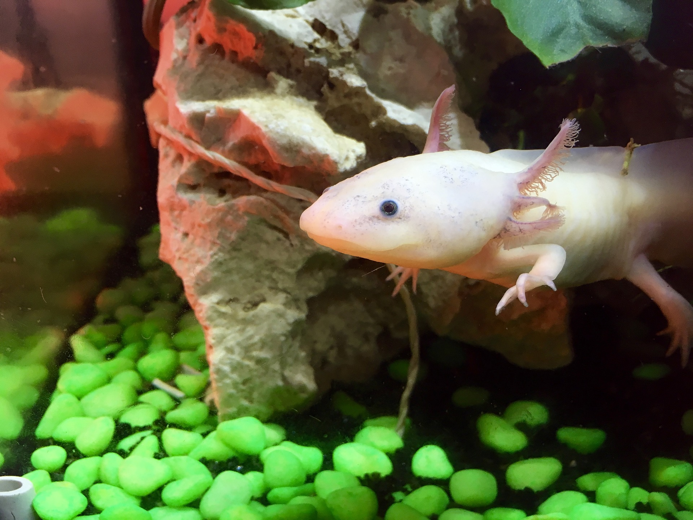

W . A . W .
W . A . W .Resources
These resources are an introduction to the water pollution problem. You are more than welcome to dive deeper into this issue.
Marine Conservation
Ocean Conservancy
National Geographic
Oceana
Save the Water
Department of Ecology: State of Washington
Protect Planet Ocean
Seametrics
Why You Should Be Concerned About Oceans from Matador Network
